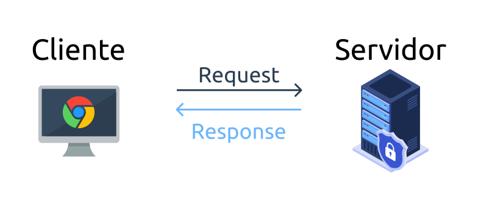
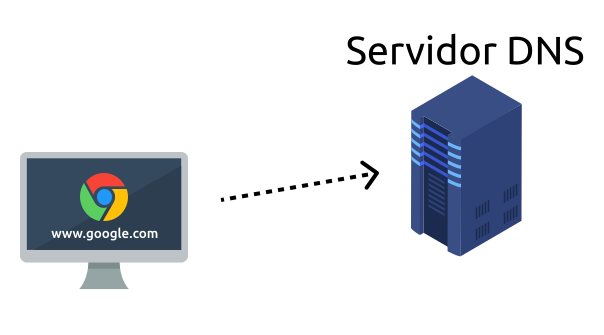
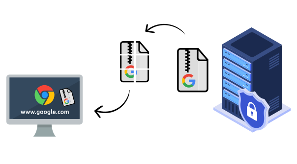

O papel da Web
Como vimos, a computação em nuvem está presente em todos os seguimentos da nossa rotina, desde o armazenamento de dados até a entrega de um lanchinho! Entretanto, esse momento tão globalizado só está acontecendo graças à uma ferramenta que você está a defrutar nesse exato momento: a rede Web.
A nossa queridíssima Web é a chave para tudo isso! Então a seguir veja alguns assuntos que abordaremos:
- Web ou internet? Qual o certo?
- Como ela surgiu?
- Como funciona a web funciona?
- Qual a influência em nossas vidas?
Web ou Internet?
Há muita confusão a respeito dos dois termos, muitas vezes sendo confundidos um com o outro, como se representassem a mesma coisa, ou seja, como se fossem sinônimos. Porém, não é bem assim que funciona...
A internet compreende diversas redes de computadores conectadas entre si que provê de diversos serviços como e-mail, FTP e troca de mensagens instatâneas.
Já a web é um ambiente formado por documentos e sites que funciona a partir da internet. Ela se utiliza de protocolos HTTP/HTTPS para fazer a passagem de informações mediadas a partir de browsers (navegadores, como Google Chrome, Firefox, Safari, entre outros) que apresentam essas informações de forma visual, assim como está acontecendo nesse exato momento na sua exploração pelo site!
A origem da Web e Internet
Agora que sabemos suas diferenças, vamos ter um breve resumo sobre como foram os seus respectivos pontos de origem:
Internet:
A Internet surgiu no período da Guerra Fria a partir da primeira redes de computadores, a ARPAnet (Advanced Research Projects Agency Network, em português, Rede da Agência de Pesquisas em Projetos Avançados), que foi criada com o objetivo de passar dados militares importantes com agilidade e segurança, ligando departamentos de pesquisas por todo o território estadunidense.
Inicialmente, houve um conflito para a comunicação entre os computadores destes centros de pesquisas. Isso porque se tratavam de computadores diferentes que "falavam" linguagens diferentes, o que gerou a necessidade da implementação de um protocolo muito primordial, mas útil na época, chamado NCP (Network Control Protocol, em português, Protocolo de Controle de Rede) que servia basicamente como uma "linguagem universal" para todos os computadores. Posteriormente, houve a necessidade de um novo protocolo mais eficiente para transmissão de dados, pela ascenção da rede, foi aí que surgiu o conjunjto de dois protocolos: TCP/IP (Transmission Control Protocol/Internet Protocol, em português, Protocolo de Controle de Transmissão/Protocolo de Internet), utilizado até hoje.
Uma curiosidade sobre a internet é o fato de como ela chega até a nossa casa. Por mais estranho que pareça, toda a Internet do mundo está conectada por cabos submarinos!
É possível ver por onde grandes cabos como esse passam através do Submarine Cable Map e no vídeo documentário da Vox "How does the internet work?", em português, "Como a internet funciona?" abaixo:
Web
A World Wide Web - comumente conhecida como WWW, W3 ou a Web - é um sistema interconectado de páginas públicas da Web acessíveis pela Internet. A Web não é a mesma coisa que a Internet: a Web é um dos muitos aplicativos criados sobre a Internet.
Tim Berners-Lee propôs a arquitetura do que ficou conhecido como World Wide Web. Ele criou o primeiro servidor da web, navegador da web e página da web em seu computador no laboratório de pesquisa de física do CERN em 1990. Em 1991, ele anunciou sua criação no grupo de notícias alt.hypertext, marcando o momento em que a Web se tornou pública pela primeira vez.
O sistema que conhecemos hoje como "a Web" consiste em vários componentes:
Logo após inventar a Web, Tim Berners-Lee fundou o W3C (World Wide Web Consortium) para padronizar e desenvolver ainda mais a Web. Este consórcio consiste em grupos de interesse da Web principais, como desenvolvedores de navegadores da Web, entidades governamentais, pesquisadores e universidades. Sua missão inclui educação e divulgação.
Como a Web funciona
Toda a Web que conhecemos e tanto utilizamos de forma cotidiana, se contrói basicamente na interação dos dispositivos que possuem conexão com a rede mundial de computadores que falamos a pouco: a Internet. Sendo que nessa interação os computadores poder ser chamados de duas formas diferentes dependendo do seu papel na rede. Entenda isso a seguir:
Clientes e servidores
Você pode não saber disso, mas o seu computador ou celular, nesse exato momento, está sendo um cliente na Web ao navegar pela Simplit.Tech ou por qualquer outro website. Isso porque pode ser considerado um cliente todo dispositivo que esteja acessando, através de um programa que permita essa navegação, como os browsers Google Chrome, Mozilla Firefox, Opera, Safari e diversos outros. Ou seja, em síntese, um computador chamado de cliente é aquele que esteja utilizando um serviço em nuvem dentro da Web.
Porém, uma página não é carregada sem que haja o contato do cliente com um computador que esteja hospedando, ou seja, armazenando os arquivos que constituem o site, nesse papel, a máquina é chamada de servidor.
Um exemplo de interação cliente-servidor acontece no ato de digitar "www.google.com" na barra de pesquisa do navegador e pressionar enter. Pois o que acontece em seguida é o efeito "pedido-resposta" ou "request-response", como na imagem simples abaixo:
- O cliente faz o pedido de se conectar ao servidor para acessar a página do Google
- O servidor autoriza ou não
- Caso seja autorizado, uma cópia da página será dividida em pacotes menores e enviada do servidor ao cliente como resposta
- Em fim, o cliente recebe os pacotes e o navegador faz a interpretação e exibição da página
Entretanto, ainda temos que conhecer mais sobre o que acontece no meio desse processo de pedido e resposta.
Começando com uma pergunta: como o cliente acessa o servidor somente com a URL "www.google.com"?
Endereço IP e DNS
Assim como os estabelecimentos físicos com pontos de referências (exemplo: a padaria na rua Joaquim Antunes, número 500), os servidores também possuem uma identificação para que seja possível um cliente chegar até ele, chamada de endereço IP, em português, endereço de Protocolo da Internet. O IP é um endereço numérico único que tanto servidores como clientes possuem e é por ele que é feita a conexão para acessar uma página.
Entretanto, ao digitar a URL do Google, nós não estamos identificando qual é o endereço IP, certo? De certa forma, não, pois o IP dos sites que acessamos está mascarado pelo Sistema de Nomes de Domínio, ou como é mais conhecido, DNS. Um servidor de DNS associa o número de IP com o domínio de um site, assim como no nosso celular associamos o nome de contato de um amigo, colega ou familiar com seu número e/ou e-mail para que não seja preciso memorizá-lo.
Então, o que acontece quando digitamos o domínio do Google é o navegador conferir no servidor DNS qual endereço está associado a ele.
TCP/IP
Temos que nos atentar ainda à forma que é feita a conexão entre os servidores e clientes, e como acontece a transmissão de dados entre eles.
Isso é possível graças ao conjunto de protocolos da Web que citamos no começo do artigo: o TCP/IP (Protocolo de comunicação e transmissão/Protocolo Internet). Enquanto o IP se preocupa em trazer uma identificação individual com o endereçamento IP, o TCP possui o trabalho de definir a forma como uma informação vai sair de uma máquina para outra.
O TCP faz com que pequenos pedaços de uma mesma informação sejam enviados sem uma ordem e rotas específicas e reorganizadas já no cliente, para que ela chegue da maneira mais eficiente possível. Esses fragmentos de dados são chamados de pacotes e, fazendo uma analogia simples, são muito semelhantes à uma correspondência com um remetente e destinatário, nesse caso, com informações como, por exemplo, porta de destino e porta de origem.
Então, pós o navegador checar o endereço IP de um determinado domínio, por exemplo, do Google, o cliente faz um pedido para se conectar ao servidor e assim que essa conexão é realizada uma cópia dos dados passam a ser transferidos.
As características de conexões fornecidas pelo TCP são:
- Conexão ponto-a-ponto, ou seja, a comunicação pode ser feita de ambos lados, tanto vindo comumente do cliente, como do servidor;
- Controle de fluxo para que haja uma gestão da quantidade de pacotes recebidos e enviados de acordo com a demanda;
- A certeza de entrega dos pacotes sem quaisquer modificações.
Porém, o TCP e IP não são os únicos protocolos que fazem a Web ser o que é, na verdade, o TCP/IP serve como uma espécie de ferramenta para o Protocolo de Transferência de Hipertexto, o HTTP.
HTTP
O HTTP é um protocolo que trabalha em cima da arquitetura "cliente-servidor" em conjunto com o TCP/IP e serve como uma espécie de linguagem comum entre navegadores, ou seja, clientes, e servidores. Ele segue o modelo "request-response" que citamos há alguns instantes atrás.
Retomando o exemplo que usamos durante todo o artigo, após termos uma conexão TCP estabelecida de forma plena, o que resta é que a página de fato chegue até o computador, e é aí que o HTTP entra. Veja isso a seguir com fluxo do HTTP resumido em alguns passos:
- O usuário faz a busca por "www.google.com";
- É consultado num servidor DNS o endereço IP do servidor em que a página está hospedada;
- O navegador, então, gera uma requisição HTTP, ou seja, um pedido de acesso à página para o servidor;
- O servidor autoriza, consequentemente, pode autorizar ou não o acesso. Se autorizado, a resposta gerada trará o HTML da página, o principal arquivo que contém todo o conteúdo e dá o primeiro "sinal de vida" de um site.
- Após, o navegador recebe os pacotes pelo TCP/IP, constrói a página e em fim, exibe sua página.
Apesar que o fluxo HTTP não se resume somente a isso, pois repare que este HTML ainda pode fazer referência a outros arquivos, como imagens, vídeos e demais arquivos componentes (como Javascript e CSS), o que geraria mais uma requisição ao servidor.
Qual a importância da Web para o cloud?
Bom, tendo de base tudo que vimos nessa seção podemos afirmar de forma simples e direta que sem os surgimentos e evoluções da Internet e Web até os dias de hoje, o cloud e toda a comodidade que ele oferece não seria possível. Exemplos de serviços disponíveis com esse paradigma da computação, como o mais frequente em nossas vidas: o armazenamento, por provedores como Google e Microsoft, ideias de aplicações como Google Documents, OneDrive, Microsoft Teams, Netflix e infinitas outras, soariam nada mais do que maluquices impraticáveis.